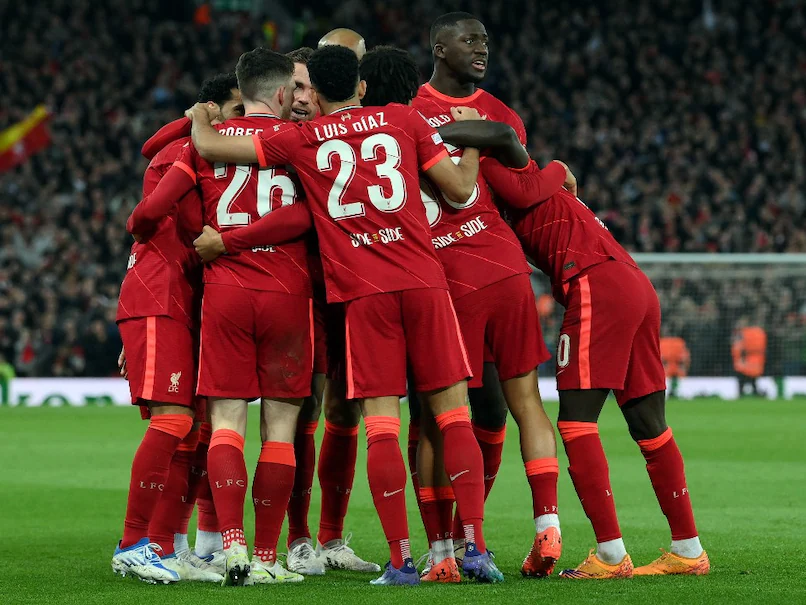
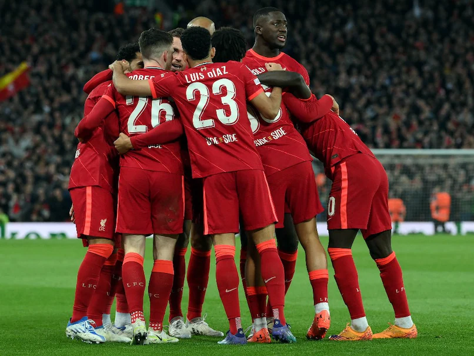
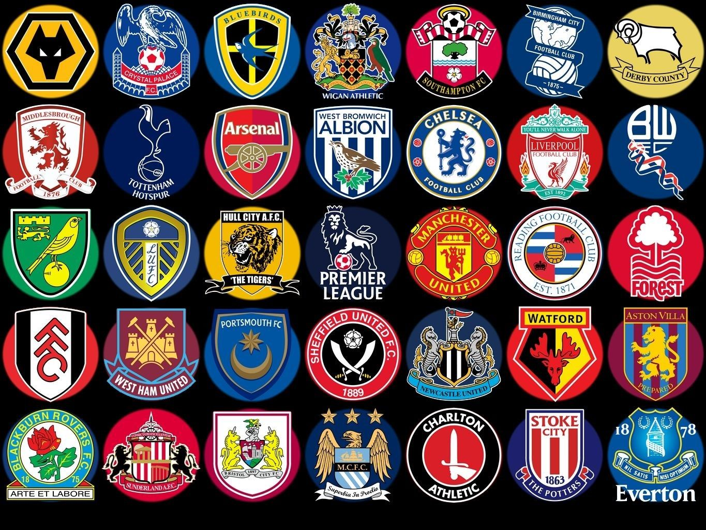

Premier League info
The Premier League (legal name: The Football Association Premier League Limited) is the highest level of the men's English football league system. Contested by 20 clubs, it operates on a system of promotion and relegation with the English Football League (EFL).
Seasons typically run from August to May with each team playing 38 matches (playing all 19 other teams both home and away).[1] Most games are played on Saturday and Sunday afternoons, with occasional weekday evening fixtures.[2]
The competition was founded as the FA Premier League on 20 February 1992 following the decision of clubs in the Football League First Division to break away from the Football League, founded in 1888, and take advantage of a lucrative television rights sale to Sky.[3] From 2019 to 2020, the league's accumulated television rights deals were worth around £3.1 billion a year